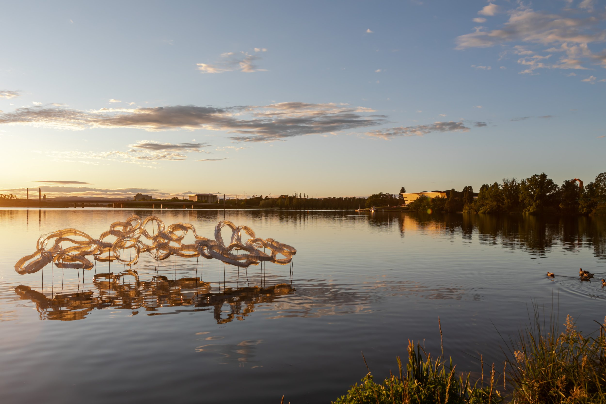

contour556

Contour 556 is Canberra’s biennial public art festival, curated by Neil Hobbs. Contour 556 is the water level of Lake Burley Griffin, which links the event in name as well as in purpose to the history of the central Canberra landscape.
More about us >
Contour 556 is Canberra’s biennial public art festival, curated by Neil Hobbs. Contour 556 is the water level of Lake Burley Griffin, which links the event in name as well as in purpose to the history of the central Canberra landscape.
See more >